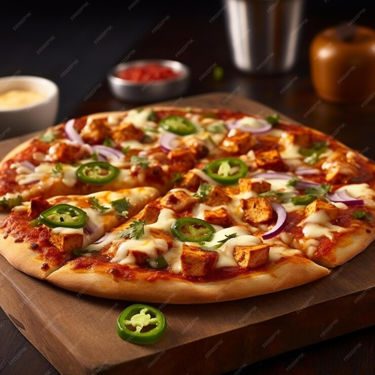

NAJLEPSZA PIZZA ŚWIATA
Pizza to danie, które kochamy wszyscy bez wyjątku. I chociaż doczekało się mnóstwa różnych wariantów, znawcy zgodnie twierdzą, że najlepsza na świecie pizza to ta w stylu neapolitańskim. Cienki placek z puszystymi, wyrośniętymi brzegami i dodatkami najwyżej jakości, swój smak zawdzięcza ciastu na pizzę, które nieco różni się od innych. Jeśli na samą myśl cieknie ci ślinka, uzbrój się w cierpliwość - sekretem smaku jest czas.
całkowity czas : 1 godzina 10 minut
SKŁADNIKI: na ciasto na pizzę
Z podanego przepisu powinny wyjść 4 placki o średnicy ok. 30 cm
- 1 kg mąki typu 00
- 600 ml wody źródlanej podgrzanej do temperatury ok. 30 stopni C
- 10 dag (lub mniej) drożdży
- 2 łyżeczki soli
- 60 ml dobrej jakości oliwy z oliwek
SKŁADNIKI: dodatki do pizzy
- szynka prosciutto
- mozzarella
- salami spianata
- oliwki
- 1 kg pomidorów
- sól do smaku
- 5 łyżek oliwy z oliwek
- torebka oregano
PRZYGOTOWANIE
- Wszystkie składniki na ciasto wymieszaj łyżką a następnie wyrabiaj
czas:13 minut
- Przykryj ciasto ściereczką i odstaw do wyrośnięcia
czas: 30 minut
- Zblęduj w oddzielnej misce pomidory, oliwę, oregano i sól
czas: 2 minuty
- Ciasto podziel na 4 równe części, każdą rozwałkuj i poukładaj składniki
czas: 5 minut
- Każdy placek upiecz osobno
czas: około 20 minut
Wypróbuj przepis
przepis